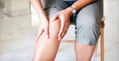

Задать вопрос
Консультант (online)

Время работы:
с 9:00 по 18:00 (Пн.-Пт.)
450-99-15
450-80-25
Преимущества

Услуги компании
Покупателю
Полезно знать
Медицина и здоровьеТравмирование колена.
Боль и неприятные ощущения в колене после падения либо в результате занятий спортом не редкость...
Преимущества технологий
Целью компрессионной терапии является укрепление вен, снижение венозного давления, восстановление функции сосудистой стенки и улучшение обменных процессов.
Компрессионный трикотаж сужает просвет вен. От этого венозный клапанный аппарат начинает работать вновь. Решается проблема застоя крови в нижних конечностях. Сосудистые сеточки и варикозно расширенные вены становятся менее выраженными или даже перестают проявляться вовсе!
Градиент давления компрессионного трикотажа неравномерен, он возрастает от лодыжки к бедру и еще больше ускоряет движение крови к сердцу. Кроме того такое воздействие снижает риск образования тромбозов и улучшает обмен веществ.
Существует 4 класса компрессии. Назначение одного из них зависит от выраженности заболевания. Основным различием между ними является степень компрессии, другими словами – сила давления на вены. Помните, определить необходимый класс компрессии может только врач !
Легкая компрессия при едва ощутимом давлении в области лодыжки. Применяют при утомляемости ног, небольших отеках к вечеру, при появлении первых косметических признаков варикоза. Рекомендуется использовать во время беременности или малоподвижной работы.
- 1 Clima ComfortИнновационная технология вязки из уникальных материалов, благодаря которой поддерживается оптимальныйводный и температурный баланс кожи на всем протяжении изделия в любое время года.
- 2 Clima FreshЗапатентованная технология, которая обеспечивает антибактериальный и антигрибковый эффекты в носочной части изделий, препятствующие размножению микроорганизмов и, как следствие, образованию неприятного запаха.
- 3 Perfect FitВысокотехнологичная эластичная нить обеспечивает способность трикотажа расстягиваться в продольном и поперечном направлениях, что позволяет добиться правильного распределения изделия по ноге без образования складок, легкости надевания и снимания компрессионных изделий.
- 4 Soft ElasticНовая технология вязки, придающая изделиям с закрытым носком дополнительную мягкость и эластичность в тыльной области стопы и обеспечивающая тем самым еще больший комфорт при использовании.
- 5 Variety 3 класса компрессии, 8 видов изделий, 7 размеров с шагом 2 см над лодыжками, 7 модельных рядов, 10 стандартных и 9 модных сезонных цветов. Такое многообразие выбора позволяет подобрать подходящее изделие лечебного трикотажа 90-95% обращающихся за помощью пациентов. В остальных случаях возможно изготовление на заказ.
Преимущества компрессионного трикотажа
Ведущие специалисты в области флебологии рекомендуют компрессионный трикотаж mediven® в качестве основного средства лечения и профилактики варикозного расширения вен.
На любой стадии хронической венозной недостаточности (ХВН), независимо от причины ее возникновения, показана компрессионная терапия. Одним из наиболее современных и эффективных способов компрессионного лечения является применение медицинского компрессионного трикотажа.Легкая компрессия при едва ощутимом давлении в области лодыжки. Применяют при утомляемости ног, небольших отеках к вечеру, при появлении первых косметических признаков варикоза. Рекомендуется использовать во время беременности или малоподвижной работы.